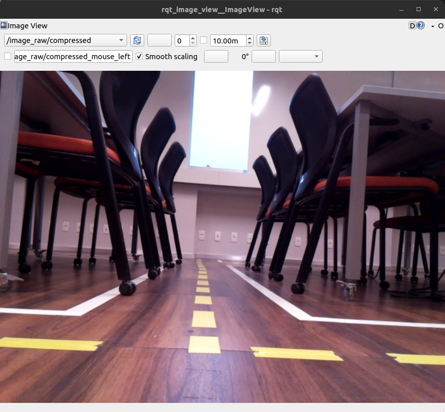

Conectando no robô físico
Neste roteiro iremos controlar o robô físico pela primeira vez. Faremos as mesmas atividades que fizemos com o robô simulado.
Ligando o Robô
O primeiro passo para usarmos o Insperbot é ligar o robô. São três passos simples:
- Primeiro você deve alocar a bateria, com cuidado, na parte inferior do robô;

- Depois você deve conectar a batertia utilizando o conector amarelo;

- Depois você deve ligar o robô utilizando o botão que fica no compartimento acima da bateria;
- Por último você deve aguardar o robô ligar completamente. Quando o processo de iniciar estiver completo ou próximo de se completar, o seu nome e endereço IP aparecerão na telinha na parte de trás.
Atenção
Em geral demora cerca de 2-3 minutos até o robô inicializar por completo.
Conectando na rede do robô
Cada robô cria duas redes Wifi própria que usaremos para enviar/receber dados diretamente. A primeira rede padrão está na banda 2.4GHz e a segunda na banda 5GHz (Ela é identificada pelo sufixo _5G). A banda 2.4GHz é a mais comum e tem maior alcance, enquanto a banda 5GHz oferece maior velocidade, mas com menor alcance. Troque entre as bandas conforme necessário para otimizar a conexão.
Agora que o Insperbot já está ligado, basta conectar na rede que ele liberou. Se atente ao número que está na parte de cima do robô, pois será o número da rede que você irá conectar. Por exmeplo, o Turtlebot 03 terá a rede: InsperBot03 e a senha da rede será InsperBot03. O mesmo acontecerá com todos os outros robôs. O nome exato da rede, considerando maiúsculas e minúculas, será a senha de rede.
Se tudo aconteceu como deveria, usando o comando:
ros2 topic list
Você verá a seguinte resposta:
Atenção
Caso o comando não retorne nada, mesmo depois de muito tempo, você pode tentar reiniciar os serviços do robô, para isso, aperte o botão da esquerda e então o botão para cima para confirmar o comando.
Teleoperando o robô
Para teleoperar o robô, você deve usar o seguinte comando:
ros2 run turtlebot3_teleop teleop_keyboard
como podemos ver na imagem acima, os comandos para movimentação do robô são w (para frente), x (para trás), a (para a esquerda), d (para a direita) e s (parar). quanto mais tempo ou vezes se pressiona a mesma tecla, maior a velocidade do movimento.
Abrindo a câmera
Você pode visualizar a imagem da câmera com o mesmo comando usado no robô simulado:
ros2 run rqt_image_view rqt_image_view
Ao digitar este comando no terminal, teremos a seguinte janela aberta:

O ponto de atenção é o tópico da câmera, que no robô físico é: /image_raw/compressed
Desligando o robô
Para desligar o robô, primeiro aperte o botão da direita e então o botão para cima para confirmar o comando, uma vez que o robô esteja completamente parado, desligue o botão e então desconecte a bateria.